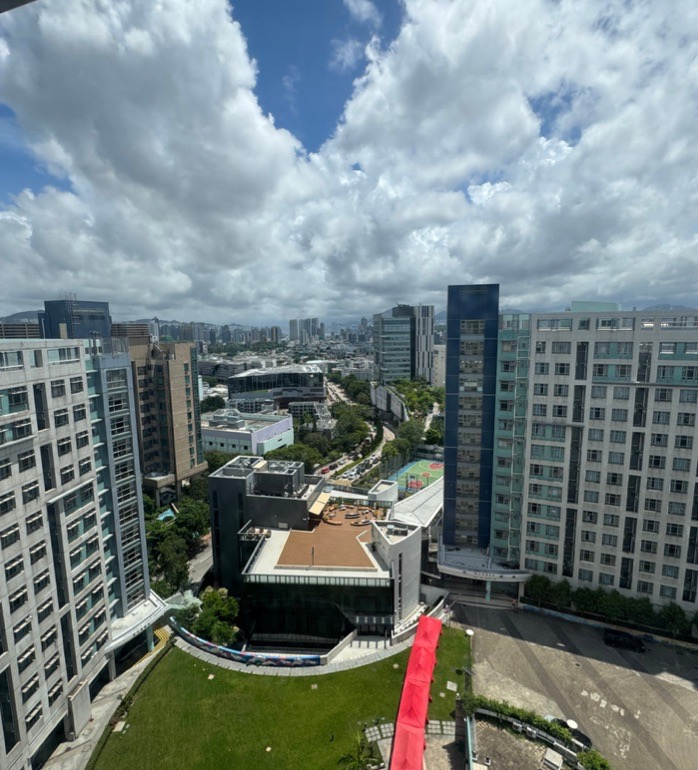
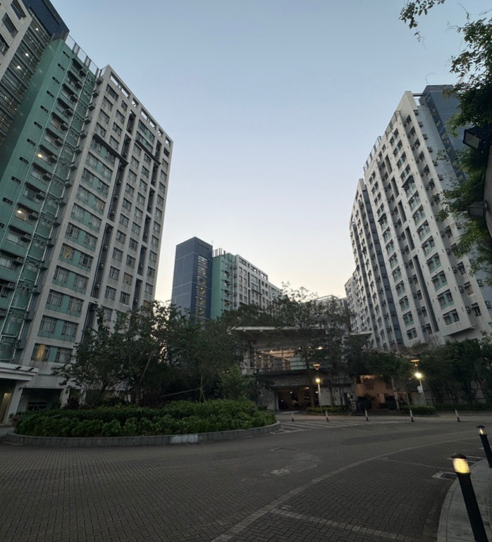
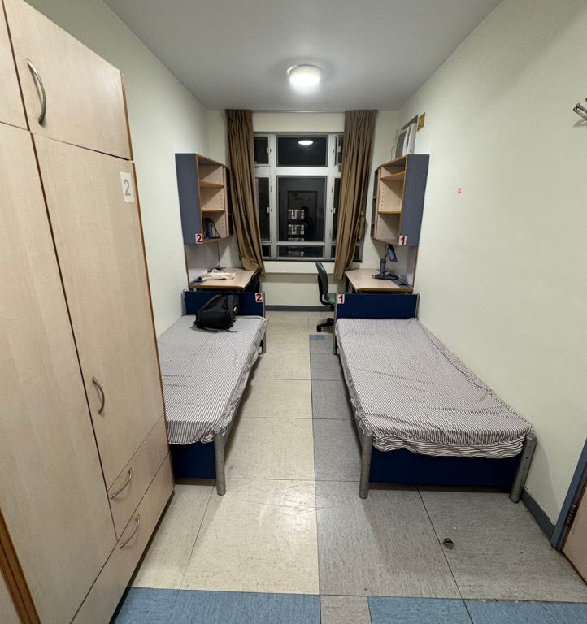

Kowloon Tong Student Residence for CityU Exchange Students
Address: 22 Cornwall St, Beacon Hill, Kowloon · 香港城市大學學生宿舍
The Kowloon Tong compound is CityU's second student residence, and it has 11 halls in the same district as the main campus. On location alone it beats Ma On Shan, because you live minutes from your classes. The catch is that it comes with an older building, a tight-knit local community and, for exchange students, very limited availability. Read this section before you hope for a bed here.
Can exchange students live here?
- Usually not. Incoming exchange students are normally allocated to the Ma On Shan compound, and you can't list Kowloon Tong as a first or second choice.
- A limited exception. From 2026/27, exchange coordinators can nominate a very limited number of exchange students to Kowloon Tong. Ask your coordinator early if you want to be considered.
- Nothing is guaranteed. Bed places depend on availability, and allocation is not guaranteed for exchange students.

Cost and commute
- Rent: Check the Student Residence Office page for the current fee, because it depends on room type and is reviewed every year. Currently the double-room is listed at HK$20 800/year/person but it’s subject to annual review.
- Journey: The compound is in Kowloon Tong, so your commute is a fraction of the 45 minutes from Ma On Shan. It takes a 10 minutes walk to get to your class so it’s definitely a bonus.
- Savings: You don't pay a daily MTR fare, and early lectures are far less painful.
- Late nights: Getting home after a night out is easier when you live close to the MTR and the campus.
- Guests: Visitors without a CityU student ID can't enter the residence, so friends and family should book their own accommodation.

The building and facilities: what to expect
Students who stayed here told us that the whole building is old, and that the beds, the kitchen and other equipment show their age. Treat it as a basic, practical place to sleep rather than a modern dorm.
- Check your room on arrival, and photograph anything that is already damaged, so you aren't blamed for it later.
- Report problems early. Tell the hall staff about anything broken as soon as you notice it.
- Bring comfort items. A mattress topper, a good pillow and an extra blanket can make a big difference.
- Read the rules. The Student Residence Office has regulations for each compound, so check them before you move in.
Community and social life
The community in Kowloon Tong is close and fairly closed. Most residents are local students who already know each other, and hall culture is strong, so it's not easy to fit in as an international student.
- Events. Halls organise inter-hall contests such as tug-of-war, and the Student Residence Office runs events and live screenings. Go to as many as you can.
- Say hello first. Locals may not approach you, so introduce yourself to your floor-mates and keep trying.
- Join something. A hall committee, a society or a sports team gives you a reason to talk to people.
- Use the support. Residence tutors and the International Friends Club, a buddy programme for exchange students, can introduce you to people.
- Invite people. Suggest a canteen lunch or a weekend trip, which is how most friendships start.
Rooms and shared spaces
Room types and shared facilities differ by hall, so check the Student Room and Hall Facilities pages on the Student Residence Office website. Ask your coordinator which hall you are placed in before you pack.
- Shared rooms. Expect to share with at least one roommate, and be honest with yourself about how you feel about sharing.
- Kitchen. Facilities are older, so don't expect modern appliances.
- Storage. Ask what storage is provided, and keep valuables locked up.

Where to eat
Kowloon Tong has far more choice than Ma On Shan.
- Campus canteens are some of the cheapest meals in the area, and you can bring takeaway back to your room.
- Festival Walk has a food court and plenty of restaurants, and it connects you straight to the MTR.
- Kowloon Tong streets have local cafés and restaurants. Read our Food guide for how to order without Cantonese.
- Supermarkets in the area cover groceries and basics.
Is it right for you?
Choose Kowloon Tong if you want the shortest commute and don't mind an older building, and if you're ready to make the first move to meet locals. Choose Ma On Shan if you want a built-in community of exchange students, and the longer commute doesn't bother you.